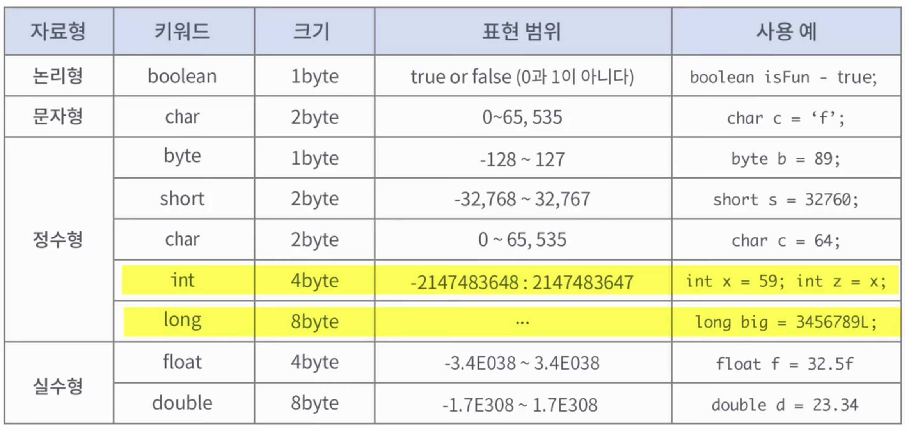
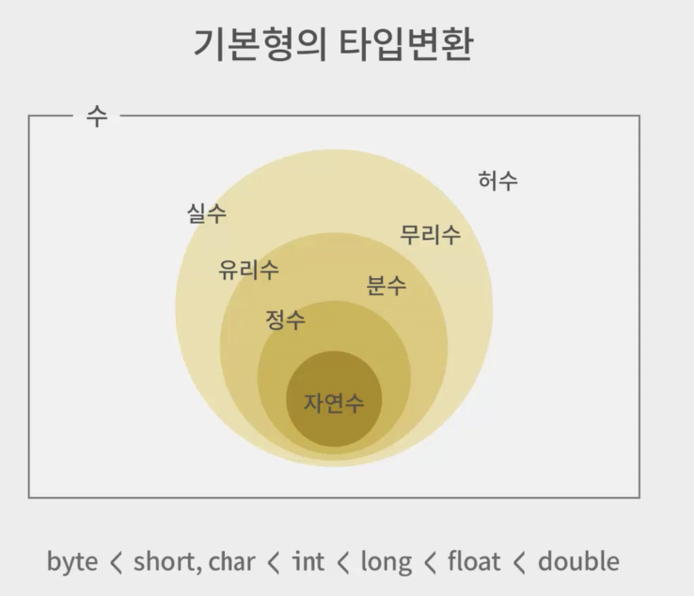

자바 언어 특징
- 플랫폼에 독립적이다.
- 자바는 JVM()만 있으면 어떤 플랫폼에서도 실행이 가능
- 객체지향언어디ㅏ.
- C나 C++은 메모리 관리가 어려운데, 자바는 메모리 관리를 Garbase Collector로 사용되지 않은 메모리르 자동적으로 정리해준다.
-
자바개발도구설치
- JDK(Java Development Kit)의 약자
- 오라클사이트에서 운영체제에 맞는 JDK를 다운로드
자바개발순서
- 소스작성
- 작성한 소스 컴파일
- 컴파일한 소스를 JVM을 이용한 실행
- HelloWorld.java를 만든다.
1 | public class HelloWorld{ |
javac HelloWorld.java // complie을 한다.
java HelloWolrd
Hello World
- 이클립스를 통해 프로젝트를 생성하고 코드작성하고 저장을 하면 자동적으로 컴파일을 해준다.
- src에 HelloWorld.java라는 파일이 생성이 되어있고,
주석
- 구현 주석
- 행단위주석(//)
블럭단위 주석(/ 주석으로할 내용 /)
문서화주석
- /* 문서에 포함할 내용을 작성함 /
- 문서화 주석은 클래스 인터페이스 그리고 멤버 당 하나씩 가질 수 있고, 선언 바로 전에 작성.
변수
- 변수란 값을 저장할 수 있는 메모리 공간, 값이 변할 수 있는 수.
- 자바는 컴파일시에 변수의 타입이 결정이 된다.
변수의 선언
- 타입 이름; ex) int count; double average;
- 명명규칙
상수
- 상수란 수식에서 변하지 않는 값을 의미한다.
- 상수의 선언 final 상수타입 상수명;
- 상수의 사용 : 상수명 = 값; ex) J = 10;(J에는 값을 담을 수 있는 기회가 단 한번만 허락됨)
상수를 사용해야 하는 경우
- 값이 변하면 위험한 경우에 사용
- 값만 봤을때 무엇을 의미하는지 쉽게 파악할 수 없는 값에도 값 자체를 사용하기보다는 상수를 사용
자바는 변수를 사용하기위해서 반드시 데이터타입이 정해져야 한다.
기본형데이터타입
- 논리형(boolean) : 1byte, true ~ false

리터럴
- 리터럴은 일종의 값지? 라고 생각을 하면 된다.
- 어떤 특정한 값 자체를 리터럴 이라고한다. 이 특정 리터럴을 값을 대입할 수 있다.
1 | char c = 'f'; |
기본형의 타입변환
형변환이란, 변수 또는 리터럴의 타입을 다른 타입으로 변환하는 것이다.

묵시형 형변환
- 크기가 작은 타입을 크기가 더 큰 타입으로 바꿀 때에는 묵시형으로 형을 바꾸어 준다.
- int x = 50000;
- long y = x;
- 이를 암묵적 형변환 이라고도 한다.

명시정 형변환
- 크기가 더 큰 타입을 작은 타입으로 바꿀 때에는 명시적으로 변환 해주어야 한다.
- long x = 50000;
- int y = x; (이렇게 묵시적으로 수행하면 컴파일러는 오류를 발생 시킨다.)
- int y = (int) x; (반드시 (타입) 으로 명시적으로 형을 바꾸어 주어야 한다.)
- 이를 강제 형 변환이라고 한다.
연산자와 연산식
- 연산 : 데이터를 처리하여 결과를 산출하는 것
- 연산자 : 연산에 사용되는 표시나 기호(+ - / *);
- 부호연산자(+ -)